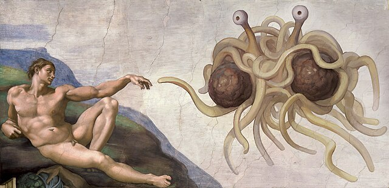

¿Qué es el Pastafarismo?
El Pastafarismo es una religión satírica que rinde homenaje al Gran Espagueti Volador, promoviendo la paz, la diversión y la tolerancia entre sus fieles. Los Pastafarianos creen que el espagueti volador creó el universo y que debemos vivir con humor y alegría.